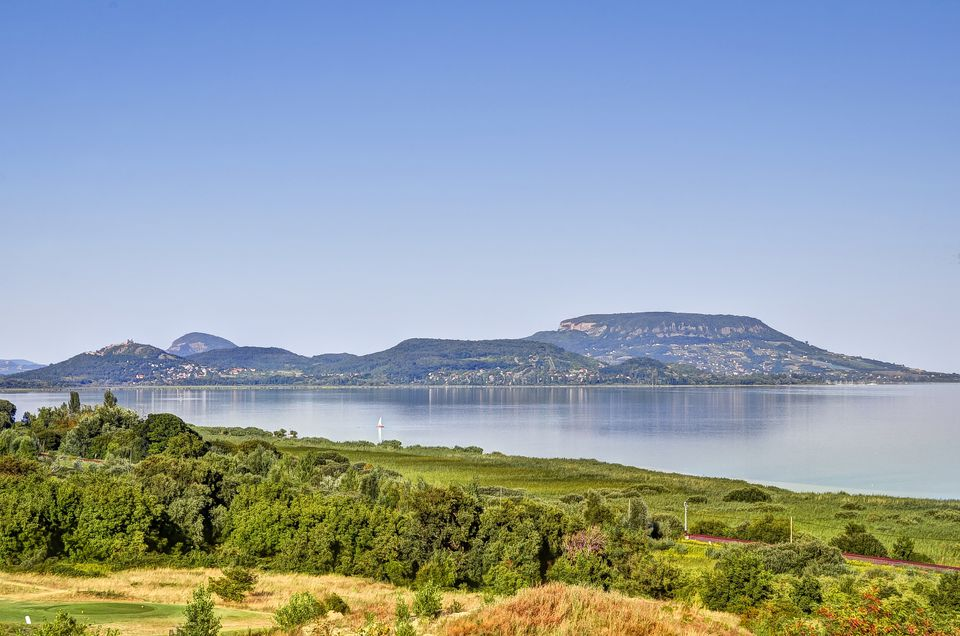
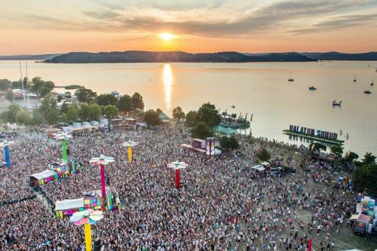

Travelling is somthing that I have always been interested in since a young age and i can safely say that i will take every chance i get to do so. I have been on many different holidays ranging from Orlando Flordia to magaluf mallorcia but the one that has always standed out to me was my tip to balaton sound music festival in hunguary. the festival is located on a lake called lake balaton and it last for 5 nights which we camped for which was quite the challange.
The Location
Lake Balaton is a freshwater lake in the Transdanubian region of Hungary. It is the largest lake in Central Europe and one of the region's foremost tourist destinations. The Zala River provides the largest inflow of water to the lake, and the canalised Sió is the only outflow. The mountainous region of the northern shore is known both for its historic character and as a major wine region, while the flat southern shore is known for its resort towns.
 My Top 3 acts
- Patrick Topping
- David guetta
- Martin Garrix